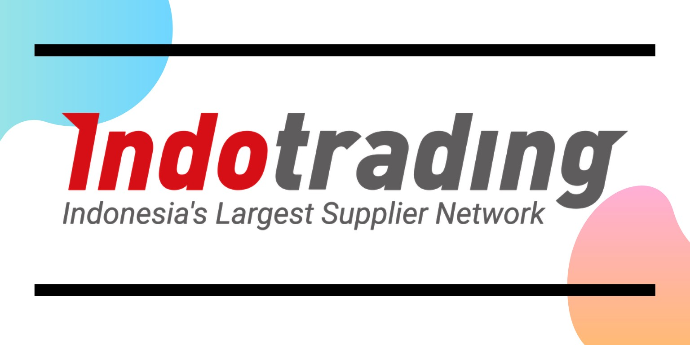
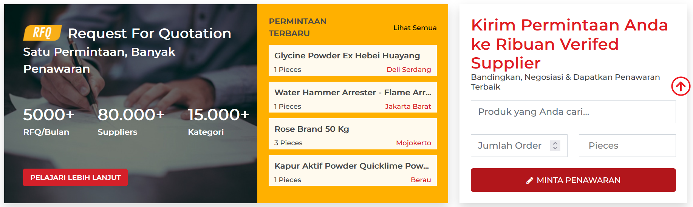
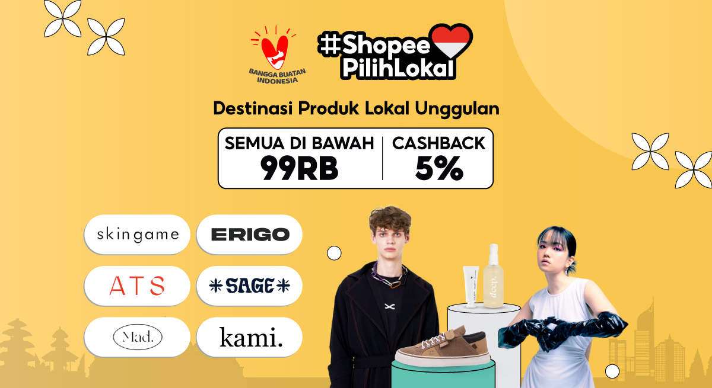

Lintang Adi Bagaskara
H1D020039
Tugas Terstruktur E-Commerce E
Pengertian B2C dan B2B
B2C (Business to Customers) eCommerce
Sektor ecommerce B2C (business to consumer) adalah model bisnis yang lazim dilakukan di pasar ecommerce. Bahkan sektor B2C adalah model bisnis yang selalu ada dipikiran orang saat mendengar kata ‘ecommerce’. Transaksi ecommerce
B2C menyerupai model ritel tradisional, di mana bisnis menjual jasa/produk kepada individu, namun bisnis dijalankan dengan platform online alih-alih dengan toko fisik.
B2B (Business to Business) eCommerce
Model B2B fokus pada penyediaan produk dari satu bisnis ke bisnis lainnya. Meskipun banyak bisnis ecommerce di area ini adalah penyedia jasa/layanan, Anda juga akan menemukan perusahaan software, perusahaan supplier dan pemasok
perabot kantor, perusahaan hosting, dan berbagai model bisnis ecommerce lainnya dari sektor ini.
Contoh Situs B2B dan B2C

Indotrading.com
Salah satu contoh situs B2B adalah Indotrading.com

Shopee
Salah satu contoh situs B2C adalah Shopee
Profil Perusahaan
Indotrading
IndoTrading.com adalah situs B2B (business-to-business) berupa direktori bisnis, yang didirikan untuk membantu sektor Usaha Kecil dan Menengah dalam memasarkan produknya secara online.
IndoTrading.com adalah satu-satunya portal perdagangan yang fokus pada promosi dan pemasaran produk-produk usaha kecil dan menengah (UKM) secara online. Website besutan PT Inovasi Sukses Sentosa ini didirikan pada awal Juni 2012
lalu.
Shopee
PT Shopee International Indonesia merupakan anak perusahaan dari SEA Group yang dulu dikenal dengan nama Garena. Didirikan pada tahun 2015, SEA Group berkantor pusat di Singapura. Shopee, yang bergerak di industri e-commerce
dipimpin oleh Chris Feng, salah satu mantan pegiat Rocket Internet yang pernah mengepalai Zalora dan Lazada. Shopee tidak hanya ada di Indonesia, melainkan memiliki jangkauan yang luas seperti di beberapa negara seperti, Malaysia,
Thailand, Vietnam, Filipina, Taiwan, China, hingga Brazil. Shopee memiliki beberapa akses untuk berjualan atau berbelanja yaitu dapat melalui website dengan mengakses https://shopee.co.id/ melalui internet, juga melalui aplikasinya
dengan cara mengunduh melalui Apps Store atau Play Store.
Shopee awalnya merupakan perusahaan yang mengambil pasar customerto customer atau C2C dan mulai mengalami peralihan menjadi business to customer sejak meluncurkan Shopee Mall pada tahun 2017 dan bertindak sebagai platform toko
online bagi toko atau distributor resmi. Shopee dalam memberikan dukungan logistik untuk penggunanya tidak hanya berhubungan dengan 70 layanan kurir di seluruh dunia tapi juga berhubungan dengan beberapa penyedia layanan jasa
transportasi online. Bahkan, mulai tahun 2020 Shopee memiliki jasa pengiriman Shopee khusus untuk beberapa penjual terpilih yang akan langsung diatur oleh tim Shopee Express.
Shopee memiliki logo berwarna oranye yang dapat diartikan sebagai warna yang hangat, mempunyai daya tarik, dan mampu meningkatkan daya minat pembeli. Shopee menggunakan gambar keranjang yang dapat diartikan sebagai keranjang
belanjaan dan huruf ‘S’ adalah simbol dari Shopee itu sendiri.
Mekanisme Jual Beli
Indotrading
- Daftar ke situs Indotrading.com
Daftarkan diri dan perusahaan terlebih dahulu agar dapat bertransaksi melalui sistem Indotrading.com
- Cari barang yang dibutuhkan
Pilih barang yang Anda inginkan di daftar kategori atau ketik nama barang yang Anda inginkan di fitur pencarian lalu klik tombol Buat Permintaan.
- Terima Penawaran (Quotation) dari Penjual
Permintaan segera diproses dan akan menerima penawaran (Quotation) dari penjual berisi total harga barang, metode dan biaya pengiriman.
- Setujui penawaran Penjual
Jika penawaran telah sesuai, dapat menyetujui dan purchase order akan otomatis terbuat.
- Dapatkan invoice dan melakukan pembayaran
Setelah PO dibuat, Anda akan mendapatkan dokumen tagihan / invoice dan segera lakukan pembayaran agar penjual dapat mengirimkan pesanan. Pembayaran Anda tidak akan diteruskan ke supplier jika Anda belum melakukan konfirmasi
penerimaan barang.
Shopee
- Daftar ke Shopee
Pembeli mendaftarkan diri terlebih dahulu sebelum login ke shopee supaya memiliki identitas diri dan berhak menggunakan platform shopee yang kemudian memilih produk di salah satu toko online.
- Memilih Produk di Shopee
Pembeli memilih beberapa produk dan memasukan ke keranjang shopee di toko pilihan yang menyediakan produk yang diinginkan.
- Melakukan Transaksi Pembayaran
Pembeli selesai memilih baju dan merasa yakin produk untuk dibeli, selanjutnya melakukan checkout keranjang, dan melakukan pembayaran ke shopee sekaligus mengisi alamat tujuan dan memilih ingin menggunakan jasa pengiriman apa.
- Verifikasi Pembayaran
Shopee akan mengecek pembayaran dan verifikasi pembayaran dan akan memberikan notifikasi ke toko online tersebut, dan toko online akan mengatur proses pengemasan barang dan mengirimkan produk sesuai jasa pengiriman yang dipilih
oleh pembeli.
- Barang Selesai Dikirim
Produk telah sampai ditangan pembeli melalui jasa pengiriman, produk dikirim sesuai dengan pesanan dan pihak shopee akan mengirimkan dana ke rekening penjual atas transaksi jual beli dan pembeli akan memberikan penilaian atas
prduk sekaligus dapat menilai pelayanan toko online tersebut dan berpengaruh untuk menarik konsumen/pembeli lainnya dan pembeli dapat memfollow toko online tersebut untuk dapat melakukan repeat order untuk pakaian baju yang
lainnya.
Mekanisme Distribusi Produl/Jasa

Kedua perusahaan penggunakan alur distribuasi yang sama, yaitu :
Penjual Online > Perusahaan Ekspedisi > Pembeli
Jumlah pedagang online di Indonesia semakin subur seiring bertambah populernya platform e-commerce dan e-marketplace. Dengan adanya platform itu, kini para penjual tidak perlu lagi bergantung dengan keberadaan gudang atau toko fisik
untuk menyimpan barang jualan. Mereka dapat berjualan di manapun berada. Para pedagang cukup mengiklankan barang di platform terkait.
Begitu ada pembeli yang membeli barang, pedagang di platform e-commerce/e-marketplace akan mengemas barang itu untuk kemudian diantar ke perusahaan ekspedisi eksternal. Ada banyak perusahaan ekspedisi yang diberdayakan pedagang
online. Mulai dari pemain ekspedisi lama seperti JNE, TIKI, POS Indonesia, hingga penyedia layanan pengiriman berbasis aplikasi seperti Go-Send dan Grab Express. Pembeli juga dapat memilih sendiri perusahaan ekspedisi yang tertera
di etalase toko online terkait.
Alur distribusi seperti ini dapat ditemukan di platform e-commerce dan e-marketplace seperti Indotrading dan Shopee yang mewadahi pedagang-pedagang online skala kecil dan menengah.
Fitur-fitur tambahan dari situs E-commerce
Indotrading.com

Indotrading.com selaku platform Direktori B2B (business to business) meluncurkan fitur baru “Permintaan Beli” atau Request for Quotation (RFQ) yang dirancang untuk memudahkan proses pencarian dan permintaan barang ke para supplier.
CEO Indotrading.com, Handy Chang menjelaskan, cara menggunakan fitur RFQ terbilang sangat mudah. Pembeli hanya mengisi form permintaan beli yang terdiri dari nama produk, spesifikasi, jumlah yang diinginkan, harga, dan kota
pengiriman di laman yang telah disediakan. Form yang sudah diisi akan diinformasikan ke supplier yang menjual produk sesuai. Kemudian sebagaimana tender online, tiap supplier terkait akan mengirimkan penawaran, dan pembelilah yang
menentukan pilihannya.
Ada beberapa keunggulan dari fitur RFQ, khususnya dalam hal transparansi pembelian. Tidak perlu kesusahan melakukan pencarian data penawaran via email, penawaran dari supplier tersimpan rapi di sistem Indotrading.com dan bisa
diakses kapanpun
Fitur RFQ ini memungkinkan pembeli mengakses penawaran dari 80 ribu supplier yang sudah bergabung dengan Indotrading. Apabila penawaran yang diterima masih kurang cocok, pembeli bisa juga mengundang supplier pilihan sendiri untuk
memberikan penawaran. Sistem RFQ ini gratis digunakan oleh siapapun. Tidak ada tambahan biaya.
Shopee

#ShopeePilihLokal ialah wadah khusus produk lokal unggulan untuk mendorong dukungan pembeli terhadap brand dan UMKM lokal melalui promosi dan diskon menarik. Dalam fitur ini akan terdapat rangkaian promosi dan diskon khusus
produk-produk lokal untuk mendorong penjualannya.
Shopee berkomitmen untuk turut serta dalam merealisasikan program pemerintah untuk mendorong keberlangsungan pelaku usaha lokal di Indonesia, yang tidak hanya untuk eksistensi karya lokal tanah air, tetapi juga secara tidak langsung
mendorong perputaran roda ekonomi nasional.
Dalam rangkaian kampanye Shopee Big Ramadhan Sale, hal ini Shopee realisasikan melalui fitur #ShopeePilihLokal yang sejalan dengan program pemerintah bangga buatan Indonesia.
Seiring kemajuan zaman, potensi produk lokal semakin berkembang khususnya dalam ragam varian serta harga yang ditawarkan. Hal ini juga tercermin pada animo yang tinggi terhadap para pelaku usaha dimana penjual usaha lokal
mendominasi dengan 97 persen penjualan barang di Shopee.